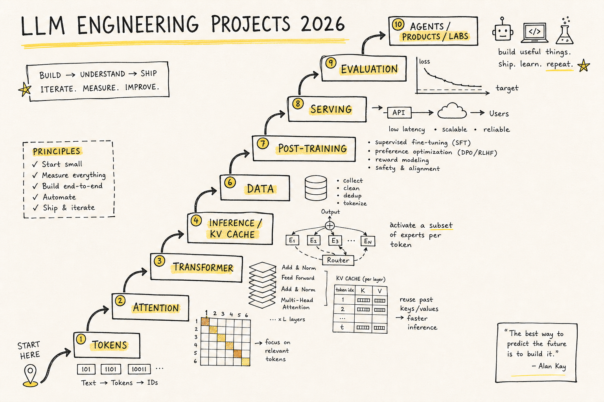
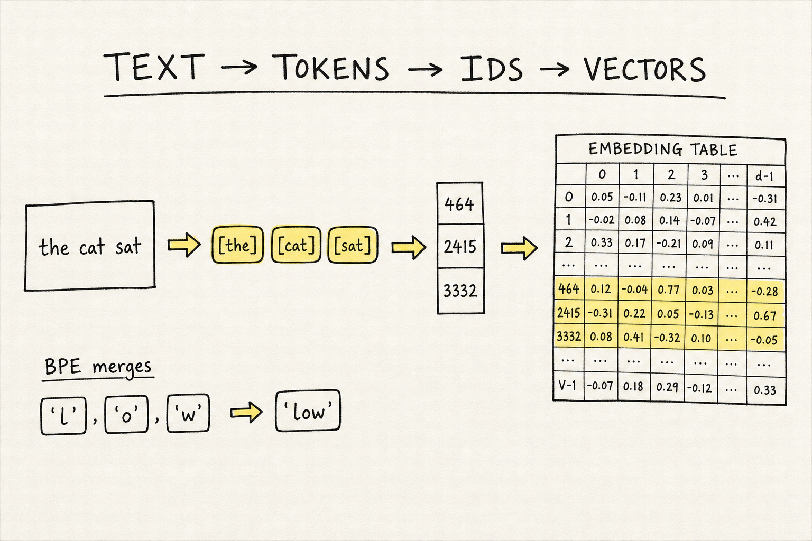
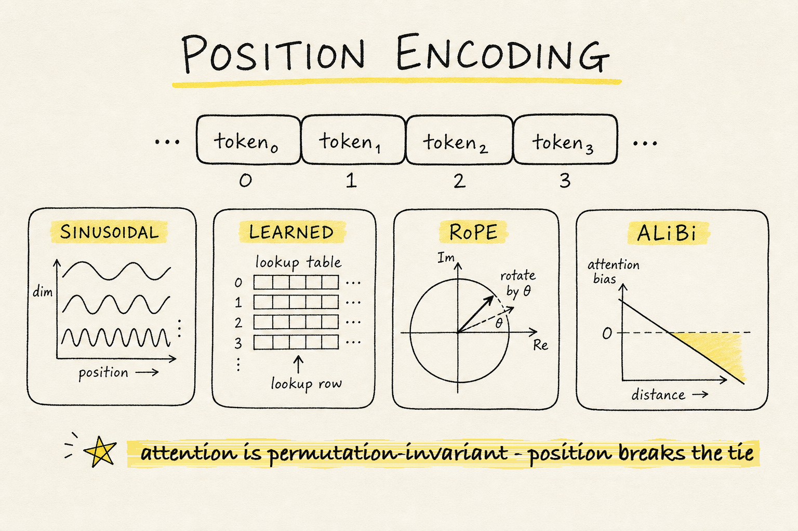
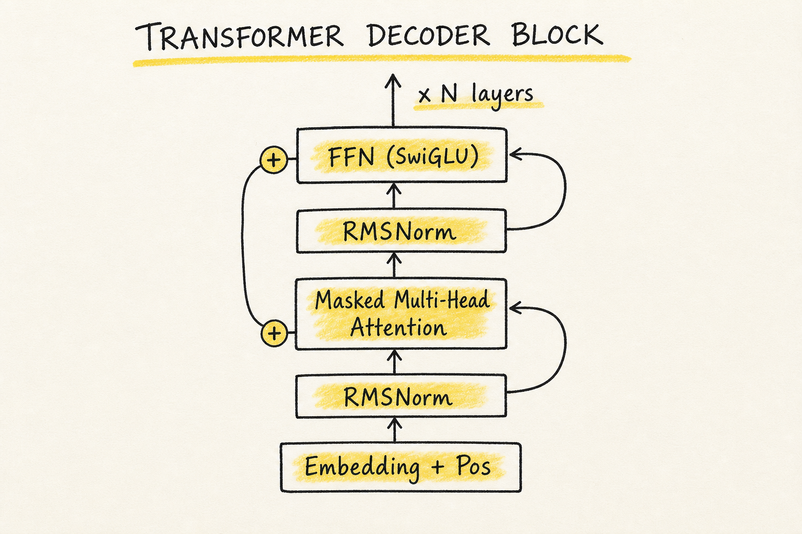
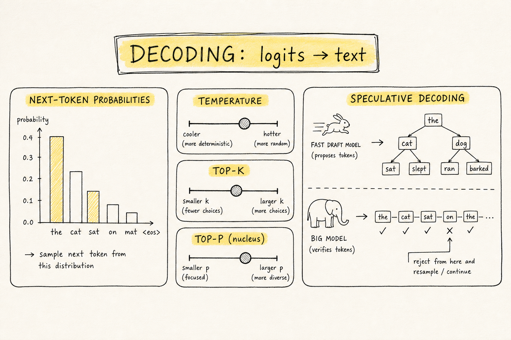

원문: Step-By-Step LLM Engineering Projects (2026 Edition) — Ahmad (@TheAhmadOsman) 발행일: 2026년 5월 25일 이 글은 원저자 Ahmad의 아티클을 한국어로 옮긴 번역입니다. 본문 구성과 내용은 원문을 충실히 따랐습니다.

어느 순간이 오면, LLM에 대해 읽는 것만으로는 부족해진다. 스택을 직접 만들어 봐야 한다. 토크나이저가 먼저, 그다음 임베딩, 위치(position), 어텐션, 트랜스포머 블록, 학습 목적함수(objective), 디코딩, 캐시, 롱 컨텍스트, 라우팅, 데이터, 사후 학습(post-training), 서빙, 평가, 도구, 그리고 정렬(alignment)·안전(safety) 순이다.
LLM의 기초를 작동하는 시스템으로 바꾸기 위한, 직접 만들고 측정하고 부러뜨리고 설명할 수 있는 프로젝트 기반 로드맵.
로컬 AI(Local AI) 시리즈가 하드웨어, 런타임, 그리고 모델 메커니즘의 토대를 잡아 줬다면, 이 글은 그 토대가 몸에 붙은 다음에 오는 단계다. 중요한 조각들을 직접 재현하고, 그것들이 망가지는 걸 지켜보고, 그 실패가 무엇을 가르쳤는지 적어 내려가면서 이 분야를 배우는 *빌드 순서(build order)*다.
토크나이제이션, 어텐션, KV 캐시, MoE, 양자화, 서빙, RAG, 에이전트, 평가, 안전은 서로 따로 노는 유행어가 아니다. 하나의 시스템을 이루는 부품들이다. 프로젝트 루프부터 시작하라. 원시 요소(primitive)를 구현하고, 그 거동을 그래프로 그리고, 일부러 부러뜨린 다음, 무엇이 바뀌었는지 설명하라. 제품과 프레임워크는, 그 밑에 깔린 모델·메모리·데이터·추론·평가 규칙을 이미 손으로 만져 본 뒤에야 훨씬 더 잘 이해된다.
목표는 “개념은 이해한다”에서 “직접 만들 수 있다”로 옮겨 가는 것이다. 2026년 5월 기준으로 그것은 곧 모델 아키텍처, 학습 루프, 추론 경로, 데이터 파이프라인, 서빙 계층, 그리고 평가 습관을 함께 배운다는 뜻이다.
초점(Focus)
이 글은 프로젝트 우선(projects-first) 가이드다. 메커니즘에서 출발한다. 토크나이저, 임베딩, 위치 인코딩 기법, 어텐션, 멀티헤드 어텐션, 트랜스포머 블록, 학습 루프, 목적함수, 디코딩, 추측 디코딩(speculative decoding), KV 캐시, MQA, GQA, MLA, 롱 컨텍스트, 효율적 어텐션, 그리고 하드웨어를 의식한 모델링까지.
그다음 더 넓은 시스템·연구 계층으로 넘어간다. 전문가 혼합(Mixture of Experts), 희소 모델의 트레이드오프, 상태공간(state-space)·선형 어텐션 대안, 디퓨전 방식 언어 모델, 데이터 파이프라인, 합성 데이터, 스케일링 법칙, 사후 학습, RLHF, PPO, GRPO, RLVR, 양자화, 서빙 스택, 평가 하니스, RAG, 도구, 에이전트, 멀티모달 어댑터, 해석가능성(interpretability), 레드팀 스위트, 그리고 완결된 캡스톤 모델 시스템까지.
그 순서가 중요하다. 모델을 학습시키기 전에, 토크나이제이션이 왜 컨텍스트 길이를 바꾸는지 이해해야 한다. 서빙 스택을 고르기 전에, 어텐션이 왜 메모리 병목(memory-bound)이 되는지 이해해야 한다. 텅 빈 제품 데모를 믿기 전에, 평가와 “실패 갤러리(failure gallery)“가 왜 중요한지 이해해야 한다.
이 로드맵이 딛고 선 토대를 위해, 셀프호스팅 LLM / 로컬 AI를 가르치는 4부작 시리즈가 있다.
- 1부: GPU Memory Math for LLMs (2026 Edition) — LLM을 위한 GPU 메모리 계산
- 2부: Memory Bandwidth for Local AI Hardware (2026 Edition) — 로컬 AI 하드웨어의 메모리 대역폭
- 3부: Inference Engines for LLMs & Local AI Hardware (2026 Edition) — LLM·로컬 AI 하드웨어용 추론 엔진
- 4부: LLMs 101 (2026 Edition): How Models Think One Token At A Time — 모델이 토큰 하나씩 사고하는 법
앞의 두 글은 하드웨어 용량과 대역폭 계산을 설명한다. 세 번째는 하드웨어를 쓸 만한 추론으로 바꿔 주는 소프트웨어 계층을 다룬다. 네 번째는 모델 쪽 메커니즘을 설명한다. 토큰, 트랜스포머, 어텐션, KV 캐시, 디코딩, 컨텍스트, RAG, 에이전트, 그리고 로컬 배포 메커니즘이다. 이 글은 그 토대를 전제로 깔고, 그것을 직접 만들고 테스트하고 공개할 수 있는 프로젝트의 연속으로 바꿔 놓는다.
원칙: 모든 프로젝트는 어렵게 얻은 개념 하나를 가르친다
아래 모든 프로젝트에 대해 똑같은 루프를 따른다.
만든다(Build). 라이브러리 버전을 쓰기 전에, 핵심 아이디어를 직접 구현한다.
그린다(Plot). 손실 곡선, 지연(latency) 곡선, 메모리 곡선, 어텐션 히트맵, 라우팅 히스토그램, 엔트로피 플롯, 또는 실패 갤러리를 만든다.
부러뜨린다(Break). 방금 만든 것을 절제(ablation)한다. 위치 인코딩을 제거하라. 코잘 마스크(causal mask)를 꺼라. 너무 공격적으로 양자화하라. 데이터를 굶겨라. 라우터를 붕괴시켜라. KV 캐시를 과부하시켜라.
설명한다(Explain). 짧은 기술 노트를 쓴다. 무엇을 기대했고, 무슨 일이 일어났고, 무엇이 놀라웠고, 다음엔 무엇을 시도하겠는가.
산출물을 출하한다(Ship the artifact). 레포, 노트북, 블로그 글, 작은 데모, 벤치마크 차트, 재현 가능한 실험 하나가 막연한 이론보다 낫다.
아래 스택은 토큰에서 시스템으로, 그리고 시스템에서 연구로 나아간다.
1부: 텍스트가 텐서가 된다

1. 토크나이저를 바닥부터 만들기
모델을 학습시키기 전에, 세상이 어떻게 기호가 되는지를 먼저 결정한다. 그 결정이 압축률, 다국어 거동, 희귀 단어, 코드, 수식, 이모지, 지연, 컨텍스트 사용량, 그리고 모델 품질에 영향을 준다.
먼저 바이트 페어 인코딩(byte-pair encoding, BPE)을 구현하라. 작은 코퍼스로 아주 작은 서브워드 어휘를 학습시켜라. 그다음 unigram/SentencePiece 방식 토크나이제이션과 비교하라. BPE가 핵심이 된 이유는 희귀 단어를 서브워드 단위로 조합해 처리하기 때문이고, SentencePiece는 공백으로 분리된 단어를 전제하지 않고 원시 텍스트에서 직접 토크나이제이션을 학습 가능하게 만들었기 때문이다.
2. 원-핫 벡터, 학습된 임베딩, 그리고 의미의 기하학
토큰 ID 자체에는 의미가 없다. 의미는 ID가 벡터가 될 때 시작된다. 가능한 가장 단순한 임베딩 테이블을 만들고, 다음 토큰 예측 목적함수로 그것을 학습시켜라.
2부: 위치가 토큰에 순서를 준다

3. 사인파, 학습형, RoPE, ALiBi 위치 기법 구현하기
어텐션만 놓고 보면 순열 불변(permutation-invariant)이다. 위치가 없으면 “dog bites man”과 “man bites dog”가 너무 비슷해 보인다. 원조 트랜스포머는 사인파 위치 인코딩을 썼고, 이후 시스템들은 학습형 위치, 회전 위치 임베딩(RoPE), ALiBi, 또는 RoPE-스케일링 변형을 자주 쓴다. RoPE는 임베딩 공간에서의 회전을 통해 상대 위치를 인코딩하고, ALiBi는 거리에 기반해 어텐션 점수에 편향을 주며 길이 외삽(length extrapolation)을 개선하도록 설계됐다.
3부: 어텐션이 문맥을 쓸모 있게 만든다
4. 토큰 하나에 대해 스케일드 닷-프로덕트 어텐션을 손으로 배선하기
트랜스포머 블록을 구현하기 전에, 단일 쿼리에 대한 어텐션을 구현하라. Q, K, V를 손으로 계산하라. 내적(dot product)을 취하라. 스케일하라. 소프트맥스를 씌워라. 그것으로 값(value)들의 가중합을 만들어라.
트랜스포머는 재귀(recurrence)를 어텐션으로 대체함으로써, 모든 토큰이 다른 토큰에 주의를 기울이면서도 시퀀스 학습을 병렬화할 수 있게 만들었다. 그 설계 선택은 여전히 대부분 LLM의 토대다.
5. 어텐션을 멀티헤드 어텐션으로 확장하기
멀티헤드 어텐션은 서로 다른 부분공간(subspace)이 서로 다른 관계 패턴을 학습하게 한다. 어떤 헤드는 국소 구문(local syntax), 유도(induction) 같은 복사, 구분자 추적, 또는 장거리 의존성에 특화될 수 있다.
4부: 트랜스포머 블록

6. 단일 트랜스포머 디코더 블록 만들기
이제 조각들을 쌓는다. 토큰 임베딩, 위치 기법, 마스크드 멀티헤드 어텐션, 잔차 연결(residual connection), 정규화, 피드포워드 네트워크, 그리고 출력 투영(projection).
현대 디코더 블록은 보통 pre-norm 방식이고, RMSNorm 또는 LayerNorm 변형을 쓰며, 가장 오래된 ReLU 계열 피드포워드 대신 SwiGLU 같은 게이트형 MLP를 자주 쓴다. RMSNorm은 LayerNorm을 재스케일링에 집중하도록 단순화했고, GLU/SwiGLU 계열 피드포워드 층은 여러 환경에서 트랜스포머 성능을 개선하는 것으로 나타났다.
7. 블록을 쌓아 “미니포머(mini-former)” 만들기
장난감 텍스트로 아주 작은 디코더 전용(decoder-only) 모델을 학습시켜라. 목표는 쓸 만한 챗봇을 만드는 게 아니다. 목표는 학습 루프를 이해하는 것이다.
5부: 목적함수가 모델이 무엇을 배울지 정의한다
8. 코잘 LM, 마스크드 LM, 프리픽스 LM, 디노이징 목적함수 비교하기
목적함수가 다르면 능력도 달라진다. BERT는 마스크드 언어 모델링으로 양방향 표현을 만들었다. GPT 계열 모델은 코잘(causal) 다음 토큰 예측을 쓴다. T5는 많은 NLP 과제를 디노이징 목적함수의 텍스트-투-텍스트 생성으로 틀 지었다. UL2는 여러 디노이징 모드를 섞어 코잘·프리픽스·양방향 거동을 모두 포괄했다.
6부: 디코딩이 확률을 텍스트로 바꾼다

9. 샘플링 대시보드 만들기
모델은 로짓(logits)을 출력한다. 제품은 텍스트를 출력한다. 디코딩이 그 다리다.
10. 추측 디코딩(speculative decoding) 구현하기
자기회귀 디코딩은 순차적이다. 한 토큰은 이전 토큰에 의존한다. 추측 디코딩은 작은 초안(draft) 모델이 토큰을 제안하고 큰 모델이 이를 검증하게 해서 생성을 가속하며, 올바르게 구현되면 목표 분포(target distribution)를 보존한다.
더 새로운 변형들은 별도 초안 모델의 필요를 줄이거나 없앤다. Medusa는 여러 미래 토큰을 제안하도록 디코딩 헤드를 추가하고, 룩어헤드 디코딩(lookahead decoding)은 보조 모델 없이 병렬 후보 n-그램을 탐색한다.
7부: KV 캐시와 메모리 병목 추론

11. KV 캐시 만들기
자기회귀 추론 동안, 과거의 키(key)와 값(value)은 매 스텝 다시 계산할 필요가 없다. KV 캐싱이 이를 저장한다. 이것은 학습과 추론을 가르는 가장 중요한 실무적 차이 중 하나다.
12. MQA, GQA를 구현하고 MLA를 공부하기
표준 멀티헤드 어텐션은 모든 쿼리 헤드에 각자의 키·값 헤드를 준다. 멀티쿼리 어텐션(MQA)은 키·값을 쿼리 헤드 전체가 공유하게 해서 메모리 대역폭을 줄인다. 그룹드쿼리 어텐션(GQA)은 그 중간 지점으로, KV 헤드를 하나가 아니라 여러 개 유지하며 흔히 품질을 더 보존하면서 추론 효율을 높인다.
2026년 기준으로 KV 캐시 축소는 주요한 아키텍처 설계 축이다. DeepSeek-V2는 저차원(low-rank) KV 압축 방식인 멀티헤드 잠재 어텐션(Multi-head Latent Attention, MLA)을 도입했고, DeepSeek-V3는 MLA를 희소 MoE 스케일링과 결합하는 흐름을 이어 갔다.
8부: 롱 컨텍스트는 시스템 문제다
13. 슬라이딩 윈도우 어텐션과 어텐션 싱크 실험 만들기
롱 컨텍스트는 설정 파일의 숫자 하나를 키운다고 풀리지 않는다. 모델은 정보를 잃거나, 무관한 토큰에 과하게 주의를 기울이거나, 긴 시퀀스에서 붕괴하거나, 서빙하기엔 너무 비싸질 수 있다.
Mistral 7B는 슬라이딩 윈도우 어텐션과 그룹드쿼리 어텐션을 결합한 실용적 조합을 오픈 모델에서 대중화했다. StreamingLLM은 초기 “어텐션 싱크(attention sink)” 토큰을 보존하면 아주 긴 토큰 스트림에 걸친 스트리밍 생성을 안정화할 수 있음을 보였다.
14. RoPE 스케일링, YaRN 방식 보간, 메모리 메커니즘으로 컨텍스트 확장하기
컨텍스트 확장은 보통 위치 보간(positional interpolation), 파인튜닝, 효율적 어텐션, 평가를 조합한다. YaRN은 RoPE 기반 컨텍스트 확장이 이전의 일부 방식보다 데이터·연산 면에서 훨씬 효율적일 수 있음을 보였다. Infini-attention은 제한된 메모리·연산으로 트랜스포머류 모델을 무한 입력 길이로 확장하도록 설계된 압축 메모리 메커니즘을 도입했다.
9부: 효율적 어텐션과 하드웨어를 의식한 모델링

15. 나이브 어텐션, PyTorch SDPA, FlashAttention 비교하기
수학적으로 똑같은 연산이라도 메모리 접근 패턴에 따라 런타임이 근본적으로 달라질 수 있다. FlashAttention은 고대역폭 메모리(HBM)의 읽기·쓰기를 줄여 어텐션을 더 빠르게 만들었다. FlashAttention-3은 하드웨어를 의식한 스케줄링, 비동기 연산, FP8 지원을 써서 NVIDIA Hopper GPU용으로 어텐션을 더욱 최적화했다.
16. 하드웨어 예산 익히기: FLOPs, 대역폭, 메모리, 정밀도
2026년 기준으로 LLM 엔지니어링은 하드웨어에 깊이 제약된다. NVIDIA Blackwell 시스템은 FP4/FP8 추론과 대형 NVLink 도메인을 강조하고, DGX B200급 시스템은 막대한 HBM 용량과 대역폭을 노출한다. 구글의 Ironwood TPU 세대는 추론을 중심으로 강하게 포지셔닝됐다. AMD의 MI300X는 메모리 집약 워크로드를 위해 가속기당 192GB HBM3를 탑재한다.
10부: 전문가 혼합(Mixture of Experts)

17. 2-전문가 라우터 만들기
희소 전문가 혼합(MoE) 모델은 모든 토큰에 대해 모든 파라미터를 활성화하지 않으면서 파라미터 수를 늘린다. Switch Transformer는 희소 전문가 라우팅으로 모델 용량을 효율적으로 키울 수 있음을 보였다. Mixtral은 각 토큰이 일부 전문가로 라우팅되는 실용적 오픈 희소 MoE 설계를 입증했고, DeepSeek의 MoE 연구는 더 세분화된 전문가와 공유 전문가(shared expert)를 탐구했다.
18. 현대 희소 모델의 트레이드오프 재현하기
최근의 프런티어·오픈웨이트 시스템들은 희소 활성화를 적극적으로 쓴다. DeepSeek-V3는 총 671B 파라미터 중 토큰당 37B를 활성화한다고 보고하며, MLA, DeepSeekMoE, 보조손실 없는(auxiliary-loss-free) 부하 분산, 멀티토큰 예측을 쓴다. Llama 4는 메타 최초의 오픈웨이트 네이티브 멀티모달 MoE 모델 패밀리를 선보였다. Qwen3는 MoE 모델 두 개(Qwen3-235B-A22B, Qwen3-30B-A3B)와 여섯 개의 덴스(dense) 모델을 오픈웨이트로 공개했다.
Moonshot의 Kimi K2 라인은 대형 희소 모델 흐름을 이어 갔다. Kimi K2.6 모델 카드는 총 1T 파라미터, 32B 활성화 파라미터, 256K 컨텍스트 윈도우, 그리고 MoonViT 비전 인코더를 갖춘 네이티브 멀티모달 에이전트형 MoE 모델로 기술한다.
11부: 바닐라 트랜스포머를 넘어서

19. 장난감 상태공간 또는 선형 어텐션 모델 구현하기
트랜스포머가 지배적이지만, 진지한 시퀀스 아키텍처가 그것뿐인 건 아니다. Mamba는 선형 시간 시퀀스 스케일링과 강력한 처리량을 주장하는 선택적 상태공간 모델(selective state-space model)을 도입했다. Mamba-2는 상태공간 쌍대성(state-space duality)을 통해 상태공간 모델과 어텐션을 더 직접적으로 연결했다. RetNet은 병렬로 학습하면서도 재귀형 추론을 지원할 수 있는 보존(retention) 메커니즘을 제안했다.
20. 디퓨전 방식 언어 모델 장난감 만들기
자기회귀 생성이 유일한 디코딩 패러다임은 아니다. LLaDA는 마스킹과 디노이징을 써서 디퓨전 방식 언어 모델을 바닥부터 학습시켜, 고품질 언어 모델링이 반드시 자기회귀여야 한다는 가정에 도전했다. Dream은 병렬 디노이징으로 오픈 디퓨전 언어 모델링을 탐구했다. Inception의 Mercury 모델은 매우 빠른 생성 속도를 내세우며 디퓨전 LLM을 마케팅했다.
12부: 데이터가 진짜 사전학습 기질(substrate)이다

21. 사전학습 데이터 파이프라인 만들기
데이터 품질은 스택에서 가장 영향력이 큰 부분 중 하나다. FineWeb는 Common Crawl 스냅샷에서 필터링과 중복 제거 선택을 적용해 강력한 오픈 사전학습을 겨냥한 15조 토큰 데이터셋을 공개했다. Dolma는 OLMo 뒤에 깔린 오픈 코퍼스를 제공했다. DataComp-LM은 표준화된 데이터 큐레이션 실험이 고정 연산에서 모델 품질을 상당히 끌어올릴 수 있음을 보였다.
22. 합성 데이터: 생성하고, 거르고, 효과를 증명하라
합성 데이터는 표적화되고, 필터링되고, 정직하게 평가될 때 도움이 된다. phi-1 연구는 고품질 “교과서 같은(textbook-like)” 데이터와 합성 코드 데이터로 학습한 작은 모델이 코딩 벤치마크에서 놀랄 만큼 잘 작동할 수 있음을 보였다. 하지만 합성 데이터는 부주의하게 쓰면 실수를 증폭하거나, 다양성을 붕괴시키거나, 평가를 오염시킬 수도 있다.
13부: 스케일링 법칙과 용량
23. 작은·중간·중간 규모 모델을 학습시키고 스케일링 곡선 맞추기
스케일링 법칙은 손실이 모델 크기, 데이터 크기, 연산에 따라 어떻게 변하는지를 정량화한다. Kaplan 방식 스케일링 법칙은 여러 자릿수에 걸친 매끄러운 거듭제곱 법칙 관계를 보였다. 이후 Chinchilla는 많은 대형 모델이 학습 부족(undertrained) 상태이며, 연산 최적(compute-optimal) 학습은 파라미터와 토큰을 더 신중하게 함께 키워야 한다고 주장했다.
14부: 사후 학습이 베이스 모델을 어시스턴트로 바꾼다

24. 파인튜닝, 인스트럭션 튜닝, 선호 튜닝
베이스 모델은 텍스트를 예측한다. 어시스턴트는 지시를 따른다. InstructGPT는 인간 피드백 파인튜닝이 단순히 사전학습 모델을 키우는 것보다 사용자 의도에 더 잘 정렬되게 만들 수 있음을 보였다. 이후 직접 선호 최적화(Direct Preference Optimization, DPO)는 많은 경우 명시적 보상 모델과 RL 루프를 피함으로써 선호 학습을 단순화했다.
25. 장난감 RLHF, PPO, GRPO, RLVR 실험실 만들기
강화학습은 추론(reasoning) 모델에 특히 중요해졌다. OpenAI의 o1 시스템 카드는 더 많은 강화학습과 더 많은 추론 시점(inference-time) 사고로 성능이 향상된다고 강조했다. DeepSeek-R1은 순수 RL R1-Zero 단계와 최종 모델을 위한 다단계 파이프라인을 포함해, 추론 지향 RL에 대한 공개 논의를 대중화했다. DeepSeekMath는 별도 비평가(critic) 모델을 피해 메모리 오버헤드를 줄이는 PPO 계열 대안으로 그룹 상대 정책 최적화(Group Relative Policy Optimization, GRPO)를 도입했다.
15부: 양자화와 압축

26. 모델을 양자화하고 손상을 측정하기
양자화는 그저 “더 작게 만들기”가 아니다. 수치 거동, 지연, 메모리 대역폭, 그리고 때로는 모델 품질까지 바꾼다.
GPTQ는 매우 큰 언어 모델을 위한 원샷(one-shot) 사후학습 양자화를 입증했다. AWQ는 핵심적인(salient) 가중치의 작은 일부를 보호하면 저비트 양자화를 개선할 수 있음을 보였다. GGUF는 로컬 추론을 위한 llama.cpp 생태계에서 널리 쓰이는 파일 포맷이 됐다.
16부: 서빙 시스템

27. 같은 모델을 여러 추론 스택으로 서빙하기
LLM 서빙은 그 자체로 하나의 분야다. vLLM은 KV 캐시 메모리 낭비를 줄이고 효율적 서빙을 지원하기 위해 PagedAttention을 도입했다. TensorRT-LLM은 인플라이트 배칭(in-flight batching), 페이지드 어텐션, 양자화, 멀티 GPU 실행 같은 기능을 포함한다. SGLang은 RadixAttention, 프리픽스 캐싱, 스케줄링, 추측 디코딩, 분리형(disaggregated) 서빙 같은 기능으로 빠른 구조적 생성을 강조한다.
17부: 평가가 추측을 멈춘다
28. 평가 하니스 만들기
모델을 측정할 수 없다면, 개선할 수도 없다. HELM은 정확도, 보정(calibration), 견고성, 공정성, 편향, 독성, 효율성을 아우르는 폭넓은 평가를 주장했다. MMLU는 여러 과목에 걸친 폭넓은 지식과 추론의 표준 벤치마크가 됐다. EleutherAI의 언어 모델 평가 하니스는 표준화된 평가를 위한 흔한 오픈 도구가 됐다.
18부: 검색, 도구, 에이전트를 캡스톤으로

29. 검색 증강 생성(RAG)을 바닥부터 만들기
RAG는 모델 안의 파라미터 메모리(parametric memory)와 외부 코퍼스의 비파라미터 메모리(non-parametric memory)를 결합한다. 원조 RAG 연구는 검색이 지식 집약 과제를 개선하고, 출력을 갱신하거나 근거 지우기(grounding) 쉽게 만들 수 있음을 보였다.
30. 도구 사용과 에이전트 루프는 스택을 이해한 뒤에만 만들기
에이전트는 가짜가 아니다. 다만 마법처럼 다루면 깨지기 쉽다. ReAct는 추론 흐름과 행동을 번갈아 짜는 것이 과제 해결과 해석가능성을 높일 수 있음을 보였다. Toolformer는 모델이 자기지도(self-supervised) 신호로부터 외부 API 사용을 학습할 수 있음을 보였다. DSPy는 LM 파이프라인을, 프롬프트와 가중치를 최적화할 수 있는 프로그램으로 재정의했다.
19부: 멀티모달 LLM
31. 작은 비전-언어 어댑터 만들기
현대 LLM은 점점 더 텍스트, 이미지, 오디오, 비디오, 구조화된 도구 출력을 소비한다. CLIP은 대조적(contrastive) 이미지-텍스트 사전학습의 위력을 보였다. Flamingo는 동결된(frozen) 비전·언어 모델을 연결해 퓨샷(few-shot) 멀티모달 학습을 가능하게 했다. LLaVA는 비전 인코더를 LLM에 연결해 시각적 인스트럭션 튜닝을 입증했다. 2026년 기준으로 Llama 4, Kimi K2.6 같은 시스템은 비전을 곁다리 기능으로 다루는 대신 네이티브 멀티모달리티를 강조한다.
20부: 해석가능성과 실패 모드

32. 회로(circuit), 프로브(probe), 희소 오토인코더 공부하기
기계적 해석가능성(mechanistic interpretability)은 모델이 내부에서 무엇을 계산하는지 이해하려 한다. Transformer-circuits 연구는 어텐션과 MLP 거동을 더 해석 가능한 구성 요소로 분해했다. Anthropic의 희소 오토인코더(sparse-autoencoder) 연구는 학습된 특징(feature)이 개별 뉴런보다 더 해석 가능할 수 있고, 때로는 대형 모델 전반에서 개념을 분리해 낼 수 있음을 보였다.
33. 레드팀과 안전 평가 스위트 만들기
모델이 더 유능해질수록, 안전 평가는 엔지니어링의 일부가 된다. Constitutional AI는 직접적인 인간 라벨에 대한 의존을 줄이기 위해, 성문화된 원칙 집합과 AI 피드백을 함께 쓰는 방식을 탐구했다. 레드팀 연구는 수동·자동 적대적 공격이 어떻게 유해 행동을 드러낼 수 있는지 보였다. 더 폭넓은 AI 안전 보고서들은 오용(misuse), 오작동(malfunction), 시스템적 영향, 통제 상실(loss of control)에 걸친 위험을 종합한다.
21부: 마지막 캡스톤 — 완결된 작은 LLM 시스템 만들기

34. 모델 하나를 학습·튜닝·양자화·서빙·평가·문서화하기
마지막 프로젝트는 스택 전체를 연결해야 한다.
현실적인 몰입(lock-in) 계획
몇 주면 직관을 바꾸기에 충분하다. 몇 달이면 진지한 토대를 쌓기에 충분하다.
1~2주차: 표현(representation)과 어텐션 토크나이저, 임베딩, 위치 인코딩, 어텐션, 마스킹, 멀티헤드 어텐션, 그리고 한 블록짜리 트랜스포머를 만든다.
3~4주차: 학습과 목적함수 미니포머를 학습시키고, 목적함수를 비교하고, 샘플링 도구를 만들고, 정규화와 활성화를 공부하고, 첫 절제(ablation) 실험을 돌린다.
5~6주차: 추론 시스템 KV 캐시, MQA/GQA, 추측 디코딩, 양자화, 서빙 벤치마크를 구현한다.
7~8주차: 롱 컨텍스트, MoE, 데이터 슬라이딩 윈도우 어텐션, 컨텍스트 확장 테스트, 장난감 MoE, 그리고 실제 데이터 파이프라인을 만든다.
9~10주차: 사후 학습과 평가 SFT, LoRA/QLoRA, DPO, 장난감 RL, 벤치마크 하니스, 안전 평가를 돌린다.
11~12주차: 캡스톤 작은 모델 하나를 학습 또는 파인튜닝하고, 양자화하고, 서빙하고, RAG/도구를 붙이고, 평가하고, 레드팀하고, 전체 회고록을 공개한다.
정확한 일정보다 중요한 건 루프 그 자체다. 만들고, 그리고, 부러뜨리고, 설명하라.
모든 프로젝트 뒤에 공개할 것
각 프로젝트마다 다섯 가지 산출물을 만들어라.
- 구현(Implementation): 테스트가 딸린 깔끔한 코드.
- 노트북(Notebook): 재현 가능한 실험 하나.
- 플롯(Plots): 거동을 보여 주는 차트 최소 3개.
- 실패 갤러리(Failure gallery): 시스템이 깨지는 사례들.
- 짧은 회고(Short write-up): 무엇을 배웠고 무엇이 생각을 바꿨는지.
그냥 “어텐션을 구현했다”라고만 올리지 마라. 히트맵을 올려라. 마스크 버그를 올려라. 엔트로피 곡선을 올려라. 지연 차트를 올려라. 이상한 반복 루프를 올려라. 전문가 라우팅 붕괴를 올려라. 양자화 회귀(regression)를 올려라. 예상 못 한 안전 실패를 올려라.
기초는 그렇게 복리로 쌓인다.
마인드셋
이론에 영원히 갇히지 마라. 하지만 데모를 이해로 착각하지도 마라.
에이전트 프레임워크는 모델을 가릴 수 있다. 서빙 프레임워크는 캐시를 가릴 수 있다. 벤치마크는 누수(leakage)를 가릴 수 있다. 제품은 실패 모드를 가릴 수 있다. 래퍼(wrapper)는 정작 일은 모델이 다 하고 있다는 사실을 가릴 수 있다.
기초는 그 숨을 곳들을 없앤다.
토크나이제이션을 배워라. 임베딩을 배워라. 위치를 배워라. 어텐션을 배워라. 잔차 스트림(residual stream)을 배워라. 정규화를 배워라. 목적함수를 배워라. 샘플링을 배워라. KV 캐시를 배워라. 롱 컨텍스트를 배워라. MoE를 배워라. 양자화를 배워라. 데이터를 배워라. 스케일링을 배워라. 사후 학습을 배워라. 서빙을 배워라. 평가를 배워라. 안전을 배워라. 실패 모드를 배워라.
그런 다음 에이전트를 만들어라. 제품을 만들어라. 회사를 만들어라. 연구소를 만들어라.
단, 단단한 기반(bedrock) 위에 만들어라.
미래의 당신이 고마워할 것이다.
다음에 또 보자.
— Ahmad
이 글은 Ahmad(@TheAhmadOsman)의 Step-By-Step LLM Engineering Projects (2026 Edition)를 한국어로 옮긴 번역입니다. 원문의 모든 권리는 원저자에게 있습니다.